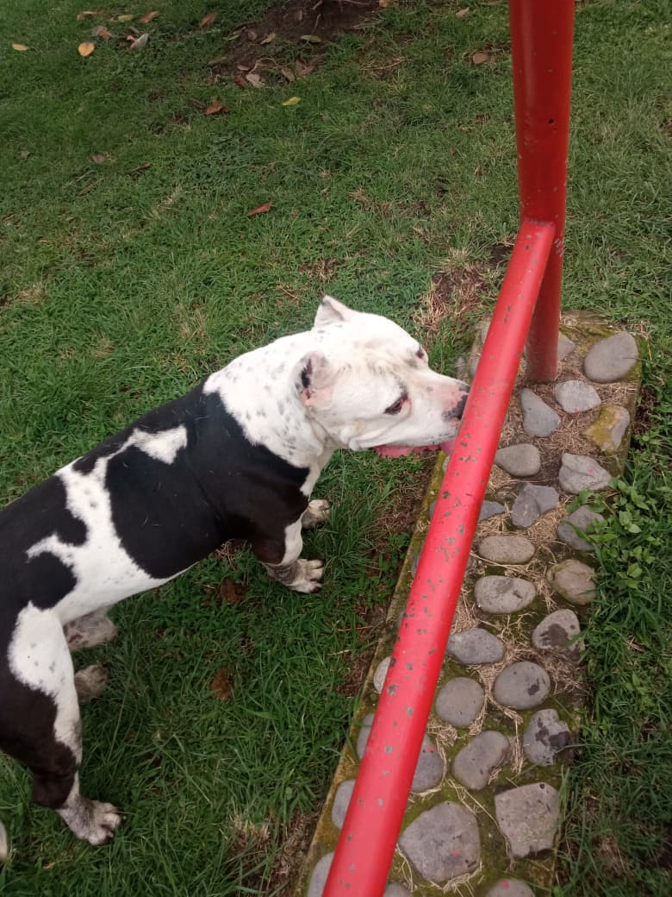
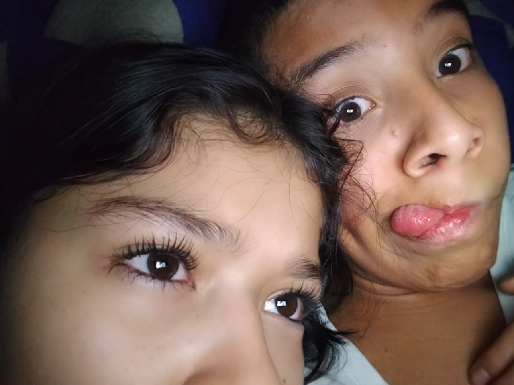

Buenos dias, tardes o noches mi amor
Quise hacerte un pequeño regalito que pues no es físico, pero igualmente significa demasiado. Esta página tiene bastantes cositas que hemos pasado juntos; es mi forma de decirte lo mucho que te amo de una manera diferente, siempre me ha encantado ser diferente a los demas y no muchos le han creado una pagina a su noviecita, aqui estoy yo para darte cositas diferentes.
la idea de esto es que siempre puedas tener mis palabras cerquita a ti, solo necesitas internet y entrar al link siempre que quieras para leer un poquito de mi inmenso amor por ti
hemos pasado por muchos momentos bonitos, pero el que mas importante considero, fue cuando tuve el valor de acercarme a ti y hablarte por primera vez, me puse demasiado nervioso, me temblaban las manos y al ver tus preciosos ojitos color cafe casi se me para el corazon, lo unico que pude decirte fue si me podias pasar tu numero para conocernos ya que me pareciste demasiado preciosa y con una energia bastante wonita, tenia tantas ganas de conocerte y le agradezco a el yo del 19/9/2025 que tuve el impulso de hablarte
muchas veces te he tomado foticos sin que te des cuenta, aunque tu digas que en esas fotos quedas mal, para mi siempre en cualquier foto te vez la niña mas guapa de todo el universo, me encanta cada expresion que haces, cada palabra que dices, me encanta la forma en la que me miras, me encanta la forma en la que caminas y amo cada minima parte de tu piel, siempre te ves tan preciosa y ese perfecto fisico que tienes combina excelente con tu preciosa y unica personalidad.
al final voy a dejar un apartado con todas las fotos que te he tomado sin que te des cuenta
como olvidar cuando despues de 7 dias nos volvimos pareja, como olvidar ese dia en el que te lleve a el lugar secreto en el que nos sentamos en esa ramita del arbolito donde se me durmio la kola JJASDJASKLJALS, como olvidar que despues de estar un buen ratico ahi en ese lugar tan tranquilo empezo a llover y cuando nos toco irnos para no mojarnos en ese momento mientras estabas en frente de mi, te pedi que me permitieras ser tu noviecito, como olvidar que de los nervios que te dieron solo quisiste clavarte en mi pecho y decir ci con la cabecita, como olvidar que desde ese momento, senti por fin lo que es ser amado
hay un dia en el que la pasamos MUI MUI bien, nos reimos muchisimo y nos caimos junticos varias veces, fue ese dia en el que estabamos con el perrito por ciudad jardin, aveces sueño con ese dia, con tu hermosa risa cada que nos deslizabamos, me encanta esa sonrisita de felicidad que tenias cada que el perrito nos empujaba, me acuerdo que tambien lo atropeyaste con el columpio y casi chillas, esos recuerdos son los que de verdad valen para mi, cada momento que paso contigo para mi es un dia en el que fui completamente feliz


uno de los momentos mas bonitos y especiales que hemos tenido juntos, fue el dia en el que te di el anillo de promesa, ese dia estaba tan nervioso porque para mi y yo creo que tambien para ti esas cosas son objetos que tienen un significado verdaderamente profundo y real, no son objetos de simples palabras, cuando te di el anillo de promesa de verdad me estaba comprometiendo a casarme contigo algun dia cambiendote el anillo de promesa por el de compromiso para despues darte tambien el de matrimonio, esos 2 anillos no se nos pueden perder, algun dia me casare contigo y todo lo que nos hemos prometido... se hara realidad

ojitos tan preciosos que tienes